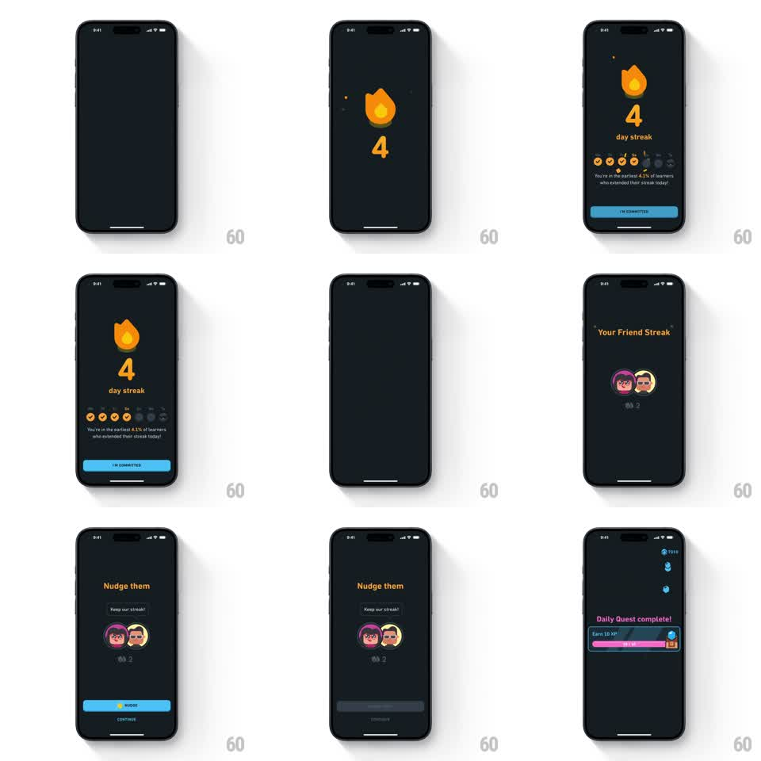

Media
Frame-by-frame

Rebuild this animation 1:1: Duolingo's 4-day streak celebration - a multi-screen reward sequence where the streak flame pops in over a rolling counter, weekday dots check off one by one, then the flow hands off to a Friend Streak screen and a nudge sheet before a quest progress bar fills.

Rebuild this animation 1:1: Duolingo's 4-day streak celebration - a multi-screen reward sequence where the streak flame pops in over a rolling counter, weekday dots check off one by one, then the flow hands off to a Friend Streak screen and a nudge sheet before a quest progress bar fills.
## Integration
Integration: stack-agnostic spec - springs given as stiffness/damping, timed motions as duration + curve; map every value to your framework and animation library of choice.
## Scene
Dark charcoal screens. Screen 1: orange streak flame icon above a large "4", "day streak" label, a row of 7 weekday circles (first 4 fill with orange checkmarks), a stat line ("You're in the earliest 4.1% of learners who extended their streak today!"), and a blue "I'M COMMITTED" button. Screen 2: "Your Friend Streak" header with two overlapping friend avatars and a count. Screen 3: "Nudge them" sheet with the same avatars, a "Keep our streak!" chip, a blue NUDGE button and CONTINUE link. Final beat: a "Daily Quest complete! Earn 10 XP" card with a purple progress bar that fills to the end marker.
## Motion spec
Pattern: multi-stage gamified reward sequence.
- Flame drops in from ~40pt above with a spring (~300/18, slight overshoot) as the counter snaps to 4 with a scale pulse (1.0 -> 1.15 -> 1.0, 250ms).
- Weekday circles fill left to right, 90ms stagger each, checkmark scaling in with a small pop (spring ~400/20).
- Stat line fades up (200ms, ease-out) after the last dot.
- Screen-to-screen transitions: horizontal push, 300ms ease-in-out.
- NUDGE button press: button scales to 0.95 and back (120ms), then a gray disabled state slides in.
- Quest card: progress bar fills from current value to full over 600ms (ease-out), gem and chest icons pop at the end (scale 0 -> 1.1 -> 1.0, 200ms).
## Calibration
- Stagger timing sells the sequence - flame first, number second, dots third; nothing overlaps.
- Keep Duolingo's palette: orange flame (#FFC800 to #FF9600 range), blue buttons (#1CB0F6), purple quest bar.
## Reduced motion
All pops become 150ms crossfades; the counter sets instantly; the quest bar fills over 300ms without the end-icon pops.
## Don't miss
- The weekday row checks off only the days up to the streak count; remaining days stay dim.
- The sequence ends on the quest card filling - the reward beat, not the streak screen.